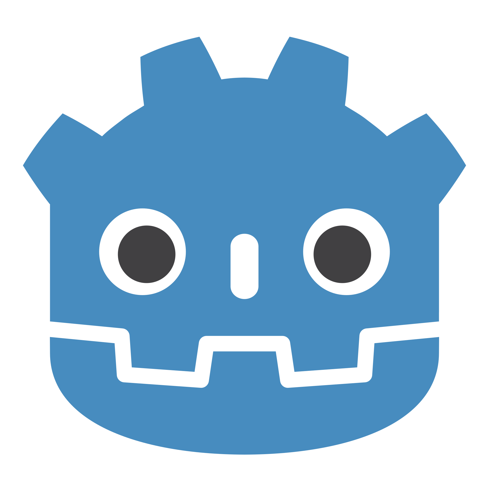
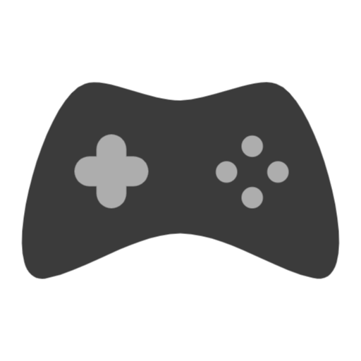

Where to begin
Prior programming experience
I started learning how to program with a Python summer course
Shortly after, in highschool, I took a class that went over the basics of game development, followed
by
another Python course and a Java course.
I have made a handful of smaller games, and even
submitted
one
as a final project last semester.

Game Engine
After deliberating over several options for a possible game engine for development, I decided on most
likely
using Godot.
I chose to avoid Unity due to its history of bad practices, and Unreal due to its focus on 3D games.
I was mostly choosing between Godot and GDevelop, both of which are quite user friendly and open to
beginners.
In the end I chose Godot over GDevelop simply due to Godot's integration with Steam, a platform for
storing owned games.
This would make it significantly easier to keep track of my projects

Gameplay
Like the original game, this game will be a simple shoot 'em up game where one controls a spaceship
to shoot and dodge asteroids.
However, unlike the original, there will be times where gameplay stops for a bit to allow the player
to upgrade their ship.
There will be several ways for the ship to upgrade, from improving movement, improving
survivability, and even improving or changing weaponry.
Between each "run", or playthrough, the points accumulated within the game will allow the player to
unlock new upgrades or mechanics in future runs.
This both gives players more of a reason to keep trying for better scores as well as allows players
to unlock the ability
to come up with many different ways to get incredibly high scores should they choose to do so.
